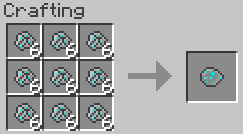

Table of content
Basics
Items
Blocks
Plant Types
Other Plants
↑
Basics
Home
Getting Started
Getting Seeds and Resources
Crafting Recipes
Configuring the Mod
Integration with Other Mods
Enhancers
Items
Mineral Rock
Dense Mineral Rock
Mineral Crystal
Mineral Hoe
Seeds
Shards
Bulbs
Blocks
Mineral Soil
Mineral Stone
Organic Ore
Plant Types
Crystalline Plants
Metallic Plants
Biochemical Plants
Other Plants
Mystical Seed Pod
↑
>
Mineral Rock
Mineral Rocks are a major crafting component in
Resynth which are required to grow and fertilize plants.
They're dropped from Mineral Stone
in small quantities
when mined.
Mineral Rocks are primarily added to Mineral Soil to increase the growth rate of plants growing atop it. Mineral Rocks are also required to grow Resynth plants as they're needed to craft a Mineral Hoe to make the Mineral Soil the plants grow atop.
Mineral Rocks are primarily added to Mineral Soil to increase the growth rate of plants growing atop it. Mineral Rocks are also required to grow Resynth plants as they're needed to craft a Mineral Hoe to make the Mineral Soil the plants grow atop.
Mineral Rock
 Mineral Rock texture.
Mineral Rock texture.
Display Name:
Mineral Rocks
Stackable:
Yes(64)
Growable:
Yes
Added in:
1.0 Beta
The Uses of Mineral Rocks
Mineral Rocks are required to grow plants
and as such are rather important and sought after.
They're primarily needed to make Mineral Soil as Resynth
plants cannot grow on normal soil. But as well as being
required for plant growth, they're
also an important crafting component for most
Resynth items and a fertilizer for plants.
Making Mineral Soil from Mineral Rocks
Mineral Rocks don't directly turn dirt into Mineral Soil. Instead, they're first crafted into Dense Mineral Rocks and smelted into Mineral Crystals. These Mineral Crystals are then used to charge up the Mineral Hoe which turns dirt into Mineral Soil at the cost of charges (Mineral Crystals).
Using Mineral Rocks as a fertilizer
Mineral Rocks also serve to speed up plant growth. They can be added to Mineral Soil by right clicking the block with Mineral Rocks in hand. Each Mineral Rock increases the mineral content of the soil block by 1% . Plants growing atop Mineral Soil blocks with a higher mineral content grow faster.
Crafting recipes that require Mineral Rocks
Some common recipes that require Mineral Rocks to be crafted/smelted.


Making Mineral Soil from Mineral Rocks
Mineral Rocks don't directly turn dirt into Mineral Soil. Instead, they're first crafted into Dense Mineral Rocks and smelted into Mineral Crystals. These Mineral Crystals are then used to charge up the Mineral Hoe which turns dirt into Mineral Soil at the cost of charges (Mineral Crystals).
Using Mineral Rocks as a fertilizer
Mineral Rocks also serve to speed up plant growth. They can be added to Mineral Soil by right clicking the block with Mineral Rocks in hand. Each Mineral Rock increases the mineral content of the soil block by 1% . Plants growing atop Mineral Soil blocks with a higher mineral content grow faster.
Crafting recipes that require Mineral Rocks
Some common recipes that require Mineral Rocks to be crafted/smelted.
Dense Mineral Rock
Mineral Crystal
Mineral Hoe
Obtaining Mineral Rocks
This section details the ways in which Mineral Rocks
are obtained.
By Mining
In the beginning, the only way you'll be able to obtain Mineral Rocks is by mining it from Mineral Stone. When mined, Mineral Stone will drop between 1 and 3 Mineral Rocks. The number of Mineral Rocks dropped can be increased with fortune.
By Farming
This method of obtaining Mineral Rocks initially requires mining a reasonable of Mineral Stone.
When mining Mineral Stone, seeds for Mineral Rocks will occasionally drop. These seeds allow you to grow Mineral Rocks (at a faster rate than most other plants ) so you don't have to keep mining Mineral Stone throughout the game.

Mineral Rocks atop Mineral Stone.
By Mining
In the beginning, the only way you'll be able to obtain Mineral Rocks is by mining it from Mineral Stone. When mined, Mineral Stone will drop between 1 and 3 Mineral Rocks. The number of Mineral Rocks dropped can be increased with fortune.
By Farming
This method of obtaining Mineral Rocks initially requires mining a reasonable of Mineral Stone.
When mining Mineral Stone, seeds for Mineral Rocks will occasionally drop. These seeds allow you to grow Mineral Rocks (at a faster rate than most other plants ) so you don't have to keep mining Mineral Stone throughout the game.
Mineral Rocks atop Mineral Stone.